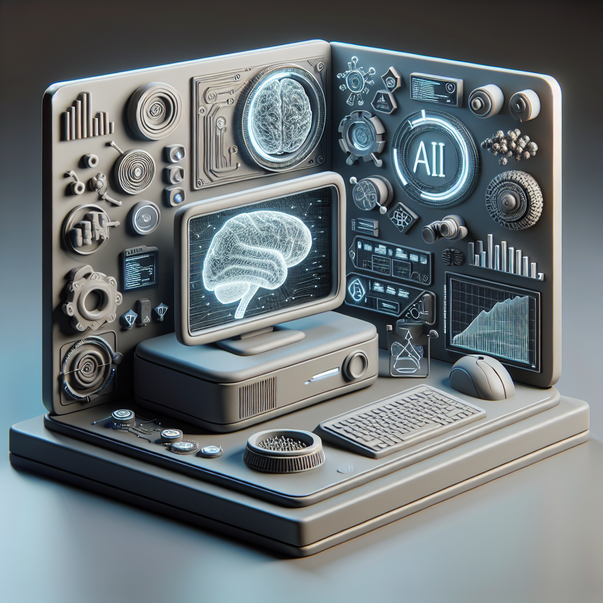

The future of software with AI
Welcome to my blog! In this space, I will be sharing my thoughts and insights on all things software-related. From coding and cleaning up messy code to the latest trends in cloud computing and the exciting world of AI, I am always eager to explore new technologies and innovations.
Software engineering is a rapidly evolving field, and it is crucial to stay up-to-date with the latest developments to remain competitive in this industry. With the rise of artificial intelligence and machine learning, the possibilities for software applications are endless. From improving efficiency and automation to creating more personalized user experiences, AI has the potential to revolutionize the way we interact with technology.
I am excited to delve into these topics and explore the ways in which AI is shaping the future of software engineering. Join me on this journey as we navigate through the ever-changing landscape of technology and discover the endless possibilities that lie ahead.
Stay tuned for more updates and insights on all things software! Thank you for joining me on this exciting adventure.